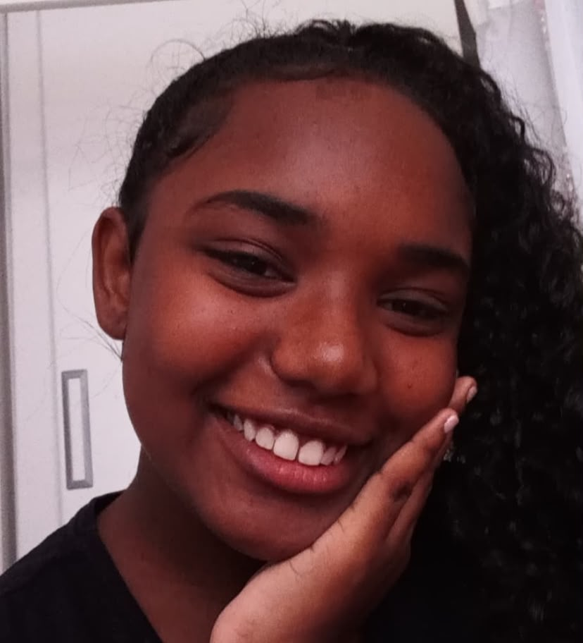
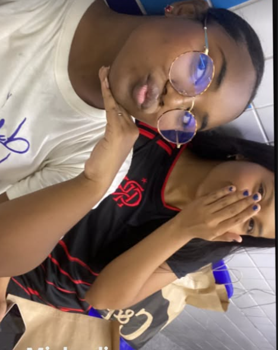
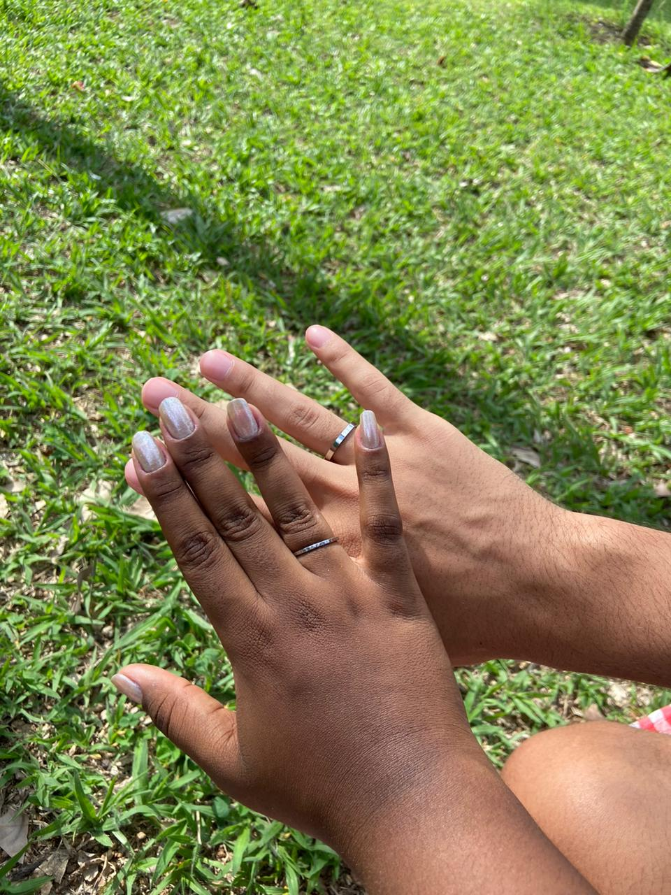

Em 2020, o mundo enfrentou uma crise inesperada: a pandemia de COVID-19. Todos os habitantes deste pequeno planeta azul foram irremediavelmente afetados, e não seria diferente com a pequenina.
Isolada, viu o mundo se voltar contra ela mais uma vez, desta vez determinado a minar todas as suas forças.
Entre guerras e batalhas, momentos de angústia, desespero e, principalmente, solidão, a pequenina amadureceu antes do esperado e mais do que o necessário. Após enfrentar demônios que até o próprio Rei do Fogo temeria, ela se manteve persistente. Em muitos momentos, esquecera o motivo de permanecer tão resistente e cogitara se entregar ao fogo do rei, mas não o fez. O motivo disso? Só os céus sabem, ela apenas venceu.

Ainda com resquícios da recente guerra, um ano se passara e a sociedade tentava voltar à normalidade, mesmo sabendo que nada seria igual novamente. A graciosa entrava no último ano do Ensino Fundamental, já residindo em sua última instituição de ensino. Naquele ano confuso, ainda sob os efeitos das lutas anteriores e com novos personagens sendo apresentados, ela avançou para o Ensino Médio
O Gênesis de Telos
Agora tudo começava de verdade; a vida até então mostraria ter sido apenas um prólogo. Era aqui que tudo realmente começava. Porém, todo início vem acompanhado de novos personagens, desta vez: uma amiga, ou quase isso, e as coisas passavam a ficar cada vez mais confusas.

Na Idade Média, era comum que nobres formassem facções para consolidar o próprio poder. Cada grupo possuía seu estilo, seu modo de operar e seus segredos. O Ensino Médio não é diferente: como uma nobre de séculos atrás, a transcendente também precisou buscar alianças.
Formada por algumas garotas permanentes e garotos temporários, a facção se consolidou. Ali nascia uma aliança que levaria anos para se dissolver, ainda que jamais tenha existido entre eles uma união verdadeira.
Querer Intangível
Algo pelo qual multidões teriam morrido e matado para alcançar: lutaram desesperadamente, esperaram com paciência, gritaram até perder a voz, calaram-se até o silêncio se tornar ensurdecedor, choraram até a cegueira e riram até os dentes caírem. Tudo por um único objetivo em comum: o amor.
Amor esse que a mais merecedora de todas ainda não tinha encontrado. Contudo, assim como os obstinados do passado, ela não desistiria de buscá-lo.
Mas como procurar algo sem ter a menor ideia de onde encontrar? Estaria com o filho de um conhecido? Talvez..., mas não, não estava lá. Com um amigo, quem sabe? Não, ali tampouco. Quem sabe alguém induzido pela facção? Definitivamente não.
Onde estaria, afinal? Por mais que procurasse, não o achava. Será que aquilo que tantos perseguiram não passava de uma mentira muito bem contada?
Aproximadamente trinta e nove mil oitocentos e trinta: este é o diâmetro deste planeta. Dito isso, ir a lugares populosos com pessoas de faixa etária semelhante era tudo o que a aventureira queria. Bem, não precisava ser necessariamente populoso; tendo um ou dois seres parecidos, já estaria perfeito.
Mas isso não lhe era permitido. Então, descobriu tudo sozinha. Agora acompanhada de aliados, pensara em aventurar-se e assim o fez.
Nessas jornadas, percebeu o quanto gostava de onde vinha e o quanto odiava onde se encontrava. Não conseguiu ver muito; entretanto, o que viu foi o suficiente para fazê-la decidir aonde queria chegar.
Uma Força Inabalável
Entre arcos históricos, existiu um que mudou o curso de uma nobre: o sequestro da felicidade. Nele, a nobre mais próxima da guardiã foi sequestrada e coagida a se manter em silêncio absoluto. Algo desse tipo não seria notado por ninguém, e ela permaneceria em agonia até a morte, mesmo que continuasse viva.
Entretanto, o inimigo não contava que a guardiã perceberia a situação e atuaria contra ele. Incomodado, ele formou alianças e assinou tratados para afastar a nobre da guardiã, usando tudo o que estava a seu alcance para isolar a pobre garota e mantê-la presa a si.
Porém, algo inesperado aconteceu: uma amizade verdadeira nasceu. Assim como em tempos de guerra ocorrem grandes avanços tecnológicos, naquele momento surgia algo que o tormento jamais poderia derrotar, mais forte que suas amarras e mais leve que o ar cuspido de sua boca. Libertando a nobre deste terrível mal, elas iniciaram sua jornada mais uma vez, agora juntas e sorrindo. Um sorriso que não se via há muito tempo.
Um Conto de Fadas
Em contos de fadas, o cavaleiro justo e forte avança para salvar a princesa indefesa, aprisionada no castelo da bruxa má.
Bem, a história a ser contada é parecida, porém diferente da maioria: esta não é sobre uma princesa presa contra a sua vontade, mas sim sobre um sacomão. E, diferentemente do cavaleiro nobre, será uma princesa observadora e atenta quem irá salvá-lo.
Num reino muito, muito distante, habitava um sacomão. Ele passava os dias confinado em um barril, preso a um medo e a um orgulho profundos demais para permitir que gritasse por socorro. Vivia à espera daquele instante final em que a ceifadora de todos os súditos viria buscá-lo; chegara, inclusive, a rogar para que ela se apressasse.
Do outro lado desse mesmo reino, vivia uma princesa que, confinada em seu castelo, cultivava o desejo ardente de explorar o mundo. Cercada por aliados, muitos deles vindos de facções vizinhas, mas ainda assim alguns eram verdadeiros companheiros, ela assistia com o coração partido ao cenário de sua terra, onde o povo sacomano parecia ter desaparecido, restando apenas a elite dos nobres ao seu redor.
Então, em uma tarde chuvosa, uma visão lhe veio em sonho: restava ainda um último sobrevivente daquele povo, um ser solitário e oculto do restante do mundo. Curiosa, mas sem saber para onde ir, guardou a imagem daquele sonho na memória.
Tudo mudou com a chegada de um inverno rigoroso, o primeiro em 200 anos. Sob o frio intenso, apenas um homem pobre passava fome no reino. Emergindo de seu barril, ele passou a vagar em busca de pequenas frutas ou animais para caçar.
Observando as ruas tomadas pela neve, a princesa notou um vulto se movendo entre as ruínas dos becos. Ali estava quem ela vira em seu sonho. Ela o parabenizou, pois o inverno marcava a festividade tradicional do povo sacomano, ainda que o festejo estivesse esquecido há muito tempo.
Assustado, mas confortado pela aura de paz que a princesa transmitia, ele conversou com outra pessoa pela primeira vez em séculos. O diálogo se estendeu pelo restante do dia. No dia seguinte, reencontraram-se no mesmo beco; no outro também, transformando aquele encontro em uma rotina diária.
Conforme o inverno chegava ao fim, o sacomão preparava-se para voltar ao isolamento de seu barril. A princesa, percebendo a injustiça daquela situação, tomou uma atitude inesperada: concedeu-lhe o poder real, algo que jamais oferecera a mais ninguém. Com essa dádiva, ele poderia realizar qualquer desejo, mesmo sabendo das consequências que isso traria para a princesa.
Ao receber a dádiva, o sacomão a encarou com um sorriso e fez seu pedido sincero: que a princesa visse realizado cada um de seus desejos.
Com o fim do inverno, a jovem princesa ascendeu ao trono como rainha. Quanto ao sacomão, jamais voltou ao seu conchego solitário; radiante e simples, passou a caminhar abertamente pelas ruas, lado a lado com a rainha, como seu fiel companheiro.
A rainha pôde, enfim, vivenciar o amor tanto cantado pelos poetas e tão perseguido pelos obstinados. Ela governava o reino, e ele a sustentava, servindo de alicerce mais firme do que qualquer exército.
E assim, viveram felizes para sempre...

princesa e O Sacomão">
A Formatura
Tudo o que se inicia um dia encontra o seu ponto final, e na trajetória escolar esse encerramento se chama formatura.
Símbolo de realização, a formanda concluíra agora o seu ensino regular.
Histórias existem diversas, tanto boas quanto ruins, mas, em momentos como este, parabenizar e celebrar aqueles que alcançaram tais conquistas é tudo o que se deve fazer.
Com a maior das honrarias, a formanda terminou o Ensino Médio com louvor e aplausos. Mais uma vez, ela venceu.